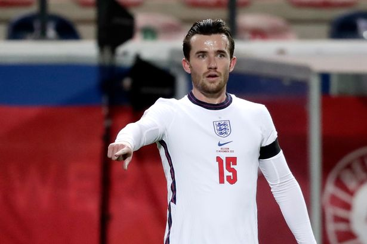

BEN CHILWELL
BEN CHILWELLนักเตะทีมชาติอังกฤษผู้ซึ่งชอบเติมเกมรุกจากตำแหน่งแบ็คซ้าย สามารถทำแอสซิสต์ได้อย่างสม่ำเสมอและมีชื่อเป็นผู้ทำประตูได้ในบางโอกาส ชิลเวลล์ เล่นเกมรับได้ดีไม่แพ้กันและเป็นกำลังสำคัญของ “จิ้งจอกสีน้ำเงิน” ในช่วงไม่กี่ปีที่ผ่านมา เขาถือเป็นฟูลแบ็คสมัยใหม่ ผสมผสานร่างกายที่แข็งแกร่งเข้ากับพลังงานในการวิ่งขึ้นลงจากริมเส้น นอกจากนี้ยังมีเทคนิคที่ยอดเยี่ยมและความสามารถในการช่วยเกมรับด้วยความเร็วยามที่ทีมโดนสวนกลับ
กับความเปลี่ยนแปลงของบทบาทฟูลแบ็คในช่วงไม่กี่ปีที่ผ่านมา ชิลเวลล์ ถือเป็นนักเตะที่สามารถมีส่วนร่วมได้ในทุกพื้นที่ของสนาม เท้าซ้ายข้างถนัดของเขาช่วยมอบสมดุลให้กับทีม และความมุ่งมั่นในการเติมเกมรุกถือว่าสอดคล้องกับความสามารถในด้านการครองบอล และการจ่ายบอลอันแม่นยำเข้ากรอบเขตโทษรวมทั้งการแทงทะลุช่องไปด้านหน้า
ชิลเวลล์ กลายเป็นนักเตะที่สูญเสียตำแหน่งตัวจริงจากการมาของทูเคิ่ลช่วงเดือนมกราคม 2021 โดยมาร์กอส อลอนโซ่ ได้กลับมาติดทีม และกุนซือชาวเยอรมันนิยมใช้แผงหลัง 3 คนบวกกับวิงแบ็ค ซึ่งเป็นแท็คติกส์ที่แข้งชาวอังกฤษไม่ค่อยมีประสบการณ์มาก่อน
อย่างไรก็ตาม ทูเคิ่ล ได้ยกย่องทัศนคติของชิลเวลล์ยามที่ไม่ได้ลงสนาม รวมทั้งความกระหายที่จะพัฒนาการเล่นในบทบาทใหม่ ที่สำคัญไปกว่านั้น เมื่อชิลเวลล์ได้รับโอกาสเขาก็สามารถคว้าเอาไว้ได้ โดยทำผลงานที่น่าประทับใจ 2 นัดติดในเกมกับแมนเชสเตอร์ ยูไนเต็ด และลิเวอร์พูล
นอกจากนี้เขายังมีบทบาทสำคัญในช่วงปลายฤดูกาลที่ตึงเครียด โดยเป็นคนแอสซิสต์ในจังหวะประตูชัยเกมบุกเยือนเวสต์ แฮม ช่วยให้พวกเราแซงกลับไปรั้งอันดับ 4 กับการแข่งขันที่เหลืออยู่ 4 นัด เช่นเดียวกับการลงเล่นครบทุกนาทีในรอบรองชนะเลิศ และชิงชนะเลิศแชมเปี้ยนส์ ลีก บวกกับเอฟเอ คัพ รอบรองชนะเลิศ เรื่องสำคัญอย่างเดียวที่ถูกพรากไปจากเขาคือการทำประตูตีเสมอใส่เลสเตอร์ ซิตี้ในเอฟเอ คัพ รอบชิงชนะเลิศ แต่โดน VAR ริบประตูคืน
ชิลเวลล์ ลงเล่นให้ทีมชาติอังกฤษมาทุกระดับชั้น ตั้งแต่รุ่น U-18 ก่อนได้ประเดิมสนามให้ทีมชุดใหญ่ของแกเร็ธ เซาธ์เกต ในนัดกระชับมิตรกับสวิตเซอร์แลนด์เมื่อเดือนกันยายน ปี 2018 หนึ่งเดือนถัดมาเขาลงเล่นเป็นตัวจริงในการแข่งขันเนชั่นส์ ลีก ซึ่งอังกฤษเสมอกับโครเอเชียแบบไร้สกอร์ จนถึงตอนนี้ ชิลเวลล์ รับใช้สิงโตคำรามไปแล้ว 11 นัด
แบ็คซ้ายรายนี้ยังได้ลงเล่นอย่างสม่ำเสมอในรอบคัดเลือกยูโร 2020 โดยทำไป 3 แอสซิสต์ในเกมที่ ทรี ไลอ้อนส์ ไล่ถล่มมอนเตเนโกร 7-0 ที่เวมบลีย์ เขามีชื่อติดทีมชาติอังกฤษในทัวร์นาเม้นต์ที่ถูกเลื่อนออกมา แต่เป็นตัวสำรองที่ไม่มีโอกาสลงสนามไปจนถึงรอบชิงชนะเลิศ
SOCIAL MEDIA
 |
|